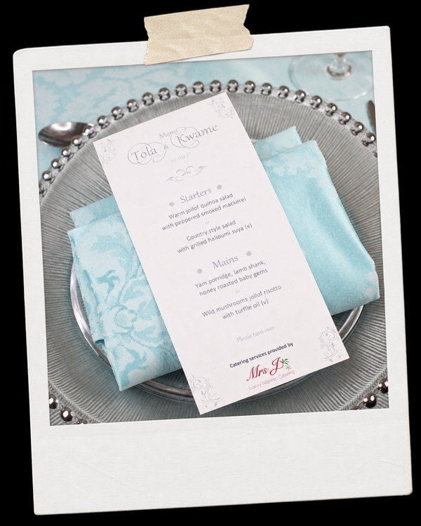
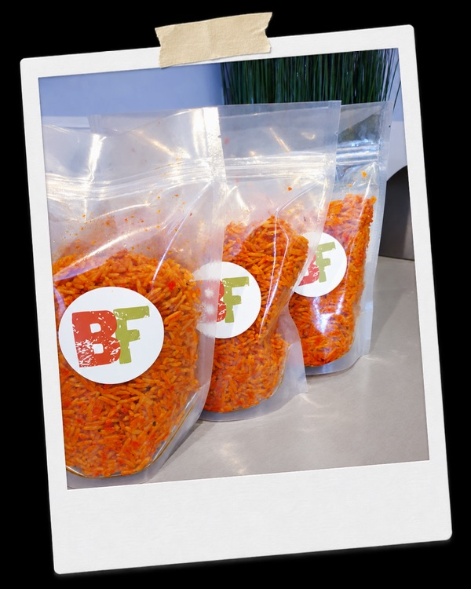
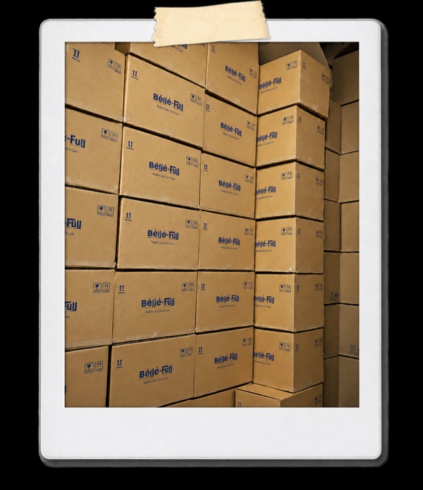
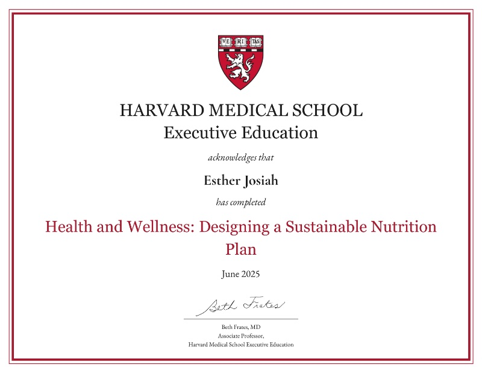

The story behind Abby’s Table
Before Abby’s Table, there was a career in marketing, over 10 years in the food business, two brands of my own, and a diagnosis that changed everything.
— Esther Abby Josiah



More than a decade in food. Two brands.
From marketing to food
Food wasn’t the original plan. Tech marketing came first, until I chose to build something around the food I loved.
Mrs J Foods
I founded Mrs J Foods and spent several years working professionally in food, from catering at the Houses of Parliament and venues including The Lanesborough, to consulting on the wedding menu for His Majesty Ogiame Atuwatse III, the Olu of Warri, and Her Majesty Olori Atuwatse III.
Béllé-Full
I went on to launch Béllé-Full, the UK’s first direct-to-consumer Nigerian prepared-meal brand, which grew into a nationwide business serving customers across the UK.
3 days after my 33rd birthday, I was diagnosed with breast cancer.
That changed everything. After treatment and recovery, I began to think more deeply about the relationship between food and health, and how the choices we make around food can shape our overall wellbeing. That change in perspective eventually led me to close the businesses I had spent years building and step away from food professionally.
Treatment. Recovery. Remission.
Remission became more than recovery. It became a mission.
A mission to understand more about the food we eat, the choices we make and the role nutrition can play in our health. That curiosity took me back to study health, wellness and nutrition, and changed the way I thought about food entirely.
What I studied

It was no longer only, ‘Does this taste good?’ It was also, ‘What is this doing to the body?’
Nigerian food, from a different perspective.
Abby’s Table takes everything I know about Nigerian food and combines it with everything I went back to learn about ingredients, nutrition and health.
- Better ingredients.
- Nutrition taken seriously.
- No unnecessary shortcuts.
- Nigerian flavour at the centre.